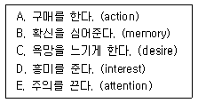
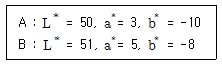
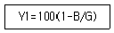
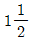
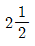
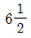
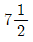
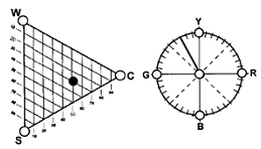
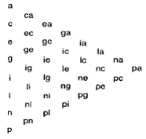

컬러리스트기사 (2006-03-05 기출문제)
1과목: 색채심리 마케팅
1. 환경색채를 분석할 때 그 지역을 대표하는 몇 개의 색상을 먼저 추출해내는데 이를 무엇이라 하는가?
- 강조색
- 배합색
- 기조색
- 조화색
(정답률: 알수없음)

2. 다음 설명 중 잘못된 것은?
- 더운 방의 환경색을 차가운 계통의 색으로 하였다.
- 지나치게 낮은 천장에 밝고 차가운 색을 칠하면 천장이 높아 보인다.
- 자동차의 외관을 차갑고 부드러운 색 계통으로 칠하면 눈에 잘 띄므로 안전을 기할 수 있다.
- 실내의 환경색은 천장을 가장 밝게 하고 중간부분을 윗 벽보다 어둡게 하며 바닥은 그 보다 어둡게 해야 안정감을 느낄 수 있다.
(정답률: 알수없음)
3. 데이터베이스 마케팅을 활용하는 최대의 장점은?
- 비용의 최소화
- 광고반응 측정의 용이
- 정확한 타겟 선정가능
- 배달시기의 선정가능
(정답률: 알수없음)
4. 소비자에 대한 심리접근법의 하나인 AIO 법으로 측정할 수 없는 것은?
- 의견
- 관심
- 심리
- 활동
(정답률: 알수없음)
5. 마케팅 기법 중 시장을 상이한 제품을 필요로 하는 독특한 구매집단으로 분할하는 방법을 무엇이라 하는가?
- 시장 표적화
- 시장 세분화
- 대량 마케팅
- 마케팅 믹스
(정답률: 알수없음)
6. 슈브뢸의 색채 조화론 중 ‘연하게 보이는 색이 색유리를 투과하여 볼 때와 같이, 전체적으로 하나의 주된 색을 이루는 배색은 조화한다.’라는 것으로, 특히 색이나 형태, 질감 등에 공통되는 조건을 조정하여 전체에 통일감을 주는 원리이다. 이를 지칭하는 용어는?
- 도미넌트 컬러(dominant color)
- 세퍼레이션 컬러(separation color)
- 톤인톤(tone in tone) 배색
- 톤온톤(tone on tone) 배색
(정답률: 알수없음)
7. 능률향상을 위한 색채계획의 효과로 맞는 것은?
- 영업직의 사무실은 한색계가 좋다.
- 사무의 집중도가 높은 사무직은 집중력을 촉진하는 난색계가 좋다.
- OA기기를 주로 사용하는 작업은 피로를 경감하는 녹색계 색채를 활용한다.
- 창조적인 사무가 많은 기획, 개발직은 한색계가 적당하다.
(정답률: 알수없음)
8. 색채 시장조사의 자료수집 방법 중 관찰법에 대한 설명으로 옳지 않은 것은?
- 조사의 신뢰도를 높이기 위해 소비자의 행동을 직접적으로 관찰하는 방법이다.
- 특정 지역의 유동인구를 분석하거나, 시청률이나 시간, 집중도 등을 조사하는데 적절하다.
- 특정효과를 얻거나 비교를 통한 정확한 정보를 얻고자 할 때 사용하는 방법이다.
- 특정 색채의 기호도를 조사하는데 적절하다.
(정답률: 알수없음)
9. 색의 항상성 (Color constancy)에 대해 가장 바르게 설명한 것은?
- 대상의 표면색에 대해 무의식적 추론에 의해 겨렁되는 색채
- 조명조건이 바뀌어도 일정하게 유지되는 색채감각
- 주변색의 변화가 규칙적일 때 경험하게 되는 색채변화
- 동일한 심리적 상태이면 주변 환경이 달라져도 같은 색채로 지각하는 현상
(정답률: 알수없음)
10. 회색의 배경색 위에 검은색 선의 형태를 그리면 배경색의 회색은 거무스름하게 보이고, 회색의 배경색 위에 백색 선의 형태를 그리면 배경색은 밝게 보이는 현상은?
- 솔젠 효과
- 비렌 효과
- 베졸드 효과
- 피스터 효과
(정답률: 알수없음)
11. 색채시장조사 방법의 유형 중에서 표본을 확률적으로 추출하는 방법은?
- 임의 추출법
- 유의 추출법
- 특수 조사법
- 소비자 패널법
(정답률: 알수없음)
12. 브랜드 이미지 전략에 대한 설명 중 옳지 않은 것은?
- 브랜드 이미지 전략은 제품을 보다 소비자에게 긍정적으로 전달되기 위한 전략이다.
- 기능성과 실용성이 많이 요구되는 생필품에 많이 활용된다.
- 소비자의 감성에 호소하는 기호품, 사치품 등의 전략에 많이 활용된다.
- 소속감, 자아 등을 상징하는 제품의 경우와 즐거움, 다양성 등을 충족시켜 줄 수 있는 제품에 사용되는 전략이다.
(정답률: 알수없음)
13. 브랜드 이미지 전략(Brand Image Strategy) 수립에 있어서 고려할 요소가 아닌 것은?
- 제품 속성
- 소비자 라이프 스타일
- 제품 물류 시스템
- 시대 유행
(정답률: 알수없음)
14. 색채 지각에 관한 설명으로 부적당한 것은?
- 색채는 심리적 효과를 제공하는데 비해 사물의 윤곽을 파악하는 데는 부적절 하다.
- 주관적인 색채경험을 활용한 예를 옵아트(opt art)에서 볼 수 있다.
- 대상의 표면색에 대해 무의식적 추론에 의해 결정되는 색채를 기억색이라 한다.
- 빛 자극의 물리적 특성이 변화하더라도 사물을 같은 색으로 보는 것은 색의 항상성 때문이다.
(정답률: 알수없음)
15. 색채 마케팅 전략을 수립하는데 있어서 생활유형(Life Style)이 관심을 끌게 된 이유가 아닌 것은?
- 물적 충실, 경제적 효용의 중시
- 소비자 마케팅에서 생활자 마케팅으로 전환
- 기업과 소비자간의 커뮤니케이션 장애제거의 필요성
- 새로운 시장 세분화(market segmentation) 기준으로서의 생활유형이 필요
(정답률: 알수없음)
16. 제품의 라이프사이클(life cycle)단계에 따라 홍보전략이 달라져야 성공적인 색채마케팅 결과를 얻을 수 있다. 다음 중 성장기에 합당한 홍보전략은?
- 제품 알리기와 혁신적인 설득
- 브랜드 우수성을 알리고 대형시장 침투
- 유행성을 강조하고 경쟁유입 방어
- 저가격을 통한 축소전환
(정답률: 알수없음)
17. 광고가 집행되는 과정을 나열한 것으로 옳은 것은?
- 상황분석 - 광고기본전략 - 크리에이티브 전략 - 매체전략 - 효과측정 또는 평가
- 상황분석 - 광고기본전략 - 매체전략 - 크리에이티브 전략 - 효과측정 또는 평가
- 상황분석 - 매체전략 - 광고기본전략 - 크리에이티브 전략 - 효과측정 또는 평가
- 상황분석 - 매체전략 - 크리에이티브 전략 - 광고기본 전략 - 효과측정 또는 평가
(정답률: 알수없음)
18. 광고에 있어서의 컬러(색채) 시장조사시 불필요한 것은?
- 자사 및 경쟁사 광고의 차별화전략(Differentiation Strategy)과 브랜드 인지도(Brand Awareness)
- 메인 타깃(Primary Target) 및 서브 타깃(secondary Target)의 구성과 광고에 대한 태도(Attitude)
- 광고 컨셉(Concept)에 따른 언어적인 광고 메시지(Verbal Message)의 표현과 임팩트(Impact)
- 시청자 반응프로파일(Viewer Response Profile : VRP), 향후 매체 계획(Media Planning)과 비이클(Vehicle)
(정답률: 알수없음)
19. 도시의 색채계획에 관한 설명 중 잘못된 것은?
- 인접한 항구도시라도 청명일수에 따라 건물과 간판, 버스의 색에 차이를 준다.
- 일조시간의 영향으로 북유럽과 영국은 짙고 어둡고 대비가 되는 색채의 건물이 많다.
- 바닷가 도시에 위치한 집합주거 외벽 색채계획시 건설사의 기업색채가 고려되어야 한다.
- 도시색채 형성에 있어서 자연적 요소 못지않게 유행적, 개성적 요인이 큰 요소로 대두되고 있다.
(정답률: 알수없음)
20. 색채기호 조사분석 과정에 맞지 않는 것은?
- 소비자의 생활에서 일관된 기호 이미지를 찾는다.
- 소비자가 지향하는 라이프 스타일을 추출한다.
- 소비자가 선호하는 이미지를 유형별로 분류한다.
- 소비자의 생활 지역에 대한 객관적인 자료를 수집한다.
(정답률: 알수없음)
2과목: 색채디자인
21. 1960년대 엘리트 문화에 반대하고 유희적, 소비적 경향의 디자인은?
- 팝 아트
- 모던 디자인
- 하이테크 디자인
- 신타이포그래피 운동
(정답률: 알수없음)
22. 영국산업혁명은 반작용으로 19세기 출발한 운동으로서 윌리엄 모리스에 의해 일어났으며, 노동의 고귀함과 자연의 아름다움을 디자인의 모티브로 했던 이 운동은?
- 베르크분트 운동
- 미술공예 운동
- 아르데코 운동
- 아르누보 운동
(정답률: 알수없음)
23. 사용자 인터페이스 디자인(User Interface Design)의 궁극적인 목표는?
- 사용자 편의성 극대화
- 홍보 효과의 극대화
- 개발기간의 최소화
- 새로운 수요의 창출
(정답률: 알수없음)
24. 어둠이 지기 시작하는 무렵에는 적색보다 청색계의 색이 더 밝아 보인다. 이런 현상을 무엇이라 하는가?
- 스펙트럼 분광 현상
- 베졸트 현상
- 푸르킨예 현상
- 유목효과
(정답률: 알수없음)
25. 아르누보 양식에서 가장 독창적이고 화려한 장식을 사용한 스페인의 건축가이며, ‘성가족 성당’으로 잘 알려져 있는 건축가는?
- 미스 반데로에
- 안토니오 가우디
- 루이스 칸
- 후랑크 로이드 라이트
(정답률: 알수없음)
26. 일상 생활 도구로써 실용 목적을 가진 디자인 행위를 가리키는 것은?
- 시각디자인
- 제품디자인
- 환경디자인
- 실내디자인
(정답률: 알수없음)
27. 병원의 색채에 대한 설명 중 틀린 것은?
- 밝은 조명과 따뜻한 색채를 사용하면 회복기 환자에게 적합하다.
- 약간 어두운 조명과 시원한 색은 단기간에 입원 환자에게 적합하다.
- 녹색은 수술실에서 수술 부위의 작업에 집중할 수 있는 효과를 높여준다.
- 베이지색은 1인용 병실, 접수 및 사무실 등에 무난하다.
(정답률: 알수없음)
28. 공공기관이나 기업이 제품의 질을 높이기 위한 정책의 일환으로 디자인이 잘된 제품에 부여하는 마크는?
- KS 마크
- GD 마크
- Green 마크
- Symbol 마크
(정답률: 알수없음)
29. 생태학적으로 건강하고 유기적으로 전체에 통합되는 인공 환경의 구축을 궁극의 목표로 삼는 것은 다음 중에 무엇에 해당되는가?
- 합목적성
- 지역성
- 문화성
- 친자연성
(정답률: 알수없음)
30. 다음의 소비자의 구매심리의 단계순서로 맞는 것은?

- C - D - E - B - A
- D - E - C - B - A
- E - D - C - B - A
- E - D - B - C - A
(정답률: 알수없음)
31. 윌리엄 고든이 주장한 것으로 2개 이상 서로 관련없어 보이는 요소를 결합하거나 합성한다는 의미를 가지고 있으며 아이디어 발상을 위해 유추를 많이 사용하는 방법은?
- 브레인 스토밍(brain stoming)
- 고든법(gorden method)
- 시네틱스법(synthesis method)
- 체크리스트법(checklist method)
(정답률: 알수없음)
32. 좋은 디자인의 조건 중 여러 대(代)를 거치면서 형태의 세련과 사용상의 개선이 이루어져 생태계에 육적으로 적응하는 인간 중심의 디자인 전통으로 나타나게 되는 것을 무엇이라고 하는가?
- 친자연성
- 문화성
- 전통성
- 지역성
(정답률: 알수없음)
33. 디자인의 원리 중 2차원이나 3차원의 공간 내에서 대상이 가지고 있는 시각적인 무게감과 의미상의 무게감들이 서로가 서로를 필요로 하고, 서로 잡아당기거나 밀면서 팽팽한 긴장감들이 서로 같은 힘으로 존재하는 상태를 무엇이라고 하는가?
- 리듬
- 균형
- 구성
- 착시
(정답률: 알수없음)
34. 기능적 디자인에서 탈피, 모조 대리석과 같은 채색 라미네이트를 사용, 장식적이며 풍요롭고 진보적인 디자인을 추구한 것은?
- 반디자인
- 극소수의
- 국제주의 양식
- 멤피스 디자인 그룹
(정답률: 알수없음)
35. 르 꼬르뷔제의 이론과 그의 사상에서 가장 중요시한 것은?
- 미의 추구와 이론의 바탕을 치수에 관한 모듈 (module)에 두었다.
- 근대 기술의 긍정적인 면을 받아들이고, 개성적인 공예가 되어야한다고 주장하였다.
- 새로운 건축술의 확립과 교육에 전념하여 근대적인 건축공간의 원리를 세웠다.
- 사진을 이용한 방법으로 새로운 조형의 표현 수단을 제시하였다.
(정답률: 알수없음)
36. 다음 중 컴퓨터 그래픽과 관련된 용어의 설명이 잘못 연결 된 것은?
- 로토스코핑(Rotoscoping) : 실제장면을 촬영한 후 화면에 등장하는 캐릭터나 물체의 윤곽선을 트레이싱하여 애니메이션을 합성하는 기술을 말한다.
- AVI : 비디오 파일 포맷으로 오디오와 비디오 내용을 번갈아 기록하는 방식으로 대부분의 CD-ROM 타이틀에서 사용되고 있다.
- MPEG : 동화상 축약 기술 방식으로 재생에 필요한 규격만 정해져 있다. 높은 축약비를 갖고 있으며 미래 Hi-TV 기술에도 중요한 역할을 하게 된다.
- 쇽웨이브(Shockwave) : 애니메이션에서 키프레임과 키프레임 사이에 중간 내용을 자동으로 생성해주는 기술로 연관된 포인트와 포인트를 자동으로 변형(Transformation)해 주는 기술이다.
(정답률: 알수없음)
37. 다음 중 운동감과 관련이 없는 내용은?
- 색이나 형의 그라데이션
- 일정하지 않은 격자무늬나 사선
- 점으로는 표현될 수 없다.
- 움직이지 않는 형태와 역동적인 형태를 배치
(정답률: 알수없음)
38. 시각 디자인이 요소를 설명한 것 중 틀린 것은?
- 점(point)은 형태의 가장 기본적인 생성원이며, 공간에서 위치를 정의하고 결정하는데 이용된다.
- 선(line)은 방향이나 굵기, 모양 등에 의해 다양한 시각적 느낌을 만들어 낼 수 있다.
- 색채(color)는 하나의 단색만으로도 그 색의 가치를 결정할 수 있으며 변화와 조화를 가질 수 있다.
- 형태(form)는 면으로 구성되어지며 공간과 질감을 갖고 있다.
(정답률: 알수없음)
39. 다음 중 색채의 기능적 역할이 아닌 것은?
- 판별성을 높임
- 작업능률 향사 및 피로감을 줄임
- 시인성을 높여 알기 쉽게 함
- 즐거움을 부여함
(정답률: 알수없음)
40. 프랑스와 일본 등에서 각 도시와 마을의 지역색 연구를 통하여 국가전체의 정체성을 추구한 색채연구가는?
- 레이몬드 로이
- 라즐러 모호리나기
- 만 레이
- 장 필립 랑클로
(정답률: 알수없음)
3과목: 색채관리
41. 디바이스 종속적 색체계에 대한 설명 중 틀린 것은?
- 디지털 색채를 다루는 전자장비들 간에 호환성이 없기 때문에 입출력 전자장비 간의 색채가 일치하지 않는다.
- CIE가 1931년에 발표한 CIE XYZ 색채공간이 대표적인 디바이스 종속적 색체계이다.
- 동일한 제조업체의 제품이라도 모델에 따라 색체계가 다르다.
- 제조업체와 모델에 따라서 입출력되는 색이 서로 다르게 나타나기 때문에 색영역 맵핑을 해야 한다.
(정답률: 알수없음)
42. 디지털 영상출력장치의 성능을 표시하는 600 dpi란?
- 1 inch 당 600개의 화점이 표시되는 인쇄영상의 분해능을 나타내는 수치
- 1 시간당 최대 인쇄매수로 나타낸 프린터의 출력속도를 표시한 수치
- 1cm 당 600개의 화소가 표시되는 모니터 영상의 분해 능을 나타낸 수치
- 1분당 표시되는 화면수를 나타낸 모니터의 응답속도를 표시한 수치
(정답률: 알수없음)
43. 다음 색채재료 중 CIE C 표준광과 D65 표준광에서의 색좌표가 가장 크게 차이가 날 만한 색채는 어느 색료를 사용한 색채인가?
- 수용성 색료
- 간섭성 색료
- 열변성 색료
- 형광성 색료
(정답률: 알수없음)
44. 색료에 관한 설명 중 틀린 것은?
- 색료는 물이나 유지의 용해 여부에 따라 염료와 안료로 나뉜다.
- 무기안료는 고대 동굴의 벽화나 도자기 유약 등에서 사용되었다.
- 투명도료는 전색제, 도막형성의 부요소, 도막조요소의 세가지 성분으로 이루어진다.
- 화학염료 중 직접염료는 양모나 실크의 염색에 사용되며 세탁이나 햇빛에 강한 장점이 있다.
(정답률: 알수없음)
45. 분광광도계의 특징으로서 틀린 것은?
- 자외선을 측정할 수 있는 분광광도계의 광원은 UV램프가 사용된다.
- 가시광선이나 적외선을 측정할 수 있는 분광광도계의 광원은 텅스텐 할로겐램프가 사용된다.
- 적분구의 종류 중 더블 빔(double beam) 방식은 데이터가 안정되고 정확한 편이다.
- 수광기(Detector)에 있는 실리콘 포토다이오드는 자외선에서 가시광선까지 측정할 수 있다.
(정답률: 알수없음)
46. 색채측정 결과에 반드시 첨부해야 될 사항으로만 나열된 것은?
- 표준광이 종류, 표준관측자, 색채측정방식
- 표준광의 종류, 표준회색도, 시료의 크기
- 표준관측자, 시료의 두께, 색상명(HV/C로 표시)
- 조명과 관측조건, 표준회색도, 측정실 온도
(정답률: 알수없음)
47. 두 견본 A,B를 측정한 결과이다. 색차 ⊿E는 얼마인가?

- 9.0
- 5.0
- 3.0
- 12.0
(정답률: 알수없음)
48. 다음 중 적절한 크기의 안료입자를 합성하는데 필요한 조건과 가장 거리가 먼 것은?
- 반응 조건
- 건조 조건
- 희석제의 종류
- 염료의 종류
(정답률: 알수없음)
49. 포토샵 등의 영상 및 색채 처리 관련 프로그램에서 주어진 영상의 크기가 작아 영상의 크기를 키울 때 격자가 생겨 계단현상이 생기는 것을 방지하기 위해 사용하는 기술은 무엇인가?
- 저주파 필터링(low-pass filtering)
- 샤프닝(Sharpening)
- 보간법(interpolation)
- 겹침(overlapping
(정답률: 알수없음)
50. 특정조건에 따라 발색되는 모든 색을 포함하는 색도 그림 또는 색공간 내의 영역을 무엇이라 하는가?
- Color Gamut
- Color Equation
- Color Matching
- Color Locus
(정답률: 알수없음)
51. 반도체 소자의 일종인 전하결합소자를 말하며, 디지털 영상 입력에 사용되는 것은?
- LCD(Liquid Crystal Display)
- Graphic Card
- CCD(Charge Coupled Device)
- Phosphor
(정답률: 알수없음)
52. 광측정(Photometry) 표시 단위가 바르게 연결 된 것은?
- 광속 : lm
- 조도 : cd/m2
- 광도 : Lux
- 휘도 : cd/Lux
(정답률: 알수없음)
53. 다음 중 아이소머리즘(isomerism)에 대한 설명으로 맞는 것은?
- 분광반사율이 달라도 같은 색자극을 일으키는 현상을 말하며 주로 육안조색시 발생한다.
- 일반적으로 육안으로 조색을 하는 경우 나타나는 현상으로 관측자마다 색이 달라져 보인다.
- 광원이 바뀌면 색이 달라져 보이는 현상이다.
- 무조건 등색이라고도 한다.
(정답률: 알수없음)
54. 전류가 필라멘트를 가열하여 빛이 방출되는 열광원으로서 장파장의 빛이 주로 방출되어 따뜻한 느낌을 주지만 전력 소모량에 비해 빛이 약하고 수명이 짧은 단점이 있는 광원은?
- 메탈할라이드등
- 방전등
- 형광등
- 백열등
(정답률: 알수없음)
55. 다음 중 CCM(Computer Color Matching) 조색의 특징이 아닌 것은?
- 광원이 바뀌어도 색채가 일치하는 무조건 등색을 할 수 있다
- 발색에 소요되는 비용을 정확히 산출할 수 있으며 경제적이다.
- 기본재질이 변해도 데이터를 새로 입력할 필요가 없다.
- 자동배색시 각종 요인들에 의하여 색채가 변할 수 있으므로 발색공정에 대한 정확한 파악과 철저한 관리가 선행되어야 한다.
(정답률: 알수없음)
56. 다음 중 유기안료의 일반적인 특징이 아닌 것은?
- 유기안료는 인쇄잉크, 도료 등에 사용된다.
- 무기안료에 비해 빛깔이 선명하고 착색력이 크다.
- 무기안료에 비해 내광성과 내열성이 크다.
- 유기용제에 녹아 색의 번짐이 나타나기도 한다.
(정답률: 알수없음)
57. 색채 오차와 관련된 베버와 페히너의 법칙에 대한 설명으로 틀린 것은?
- 색상이 급비 급수적으로 변화하면 명도와 채도도 등비 급수적으로 변화한다.
- 자극 강도와 감각 강도의 상관 관계를 나타낸다.
- 베버-페히너의 법칙은 베버의 법칙으로부터 도출된 것이다.
- 감각의 강도는 자극 강도의 대수에 비례한다.
(정답률: 알수없음)
58. 다음 중 관측색채의 오차에 영향을 주는 요인과 가장 거리가 먼 것은?
- 광원의 차이
- 주변 온도나 습도의 차이
- 관찰자에 따른 차이
- 크기(실물과 샘플)에 따른 차이
(정답률: 알수없음)
59. 필터식 색채측정 장치에서 빛을 전기석 신호를 바꾸는 역할을 하는 곳은?
- 텅스텐램프
- 시료대
- 광검출기
- 전산장치
(정답률: 알수없음)
60. 표면색의 시감 비교 방법에 대한 설명으로 틀린 것은?
- 조명의 균제도는 0.8 이상인 것이 바람직하다.
- 시료면 및 표준면의 법선에 대하여 45° 방향을 중심으로 하여 확산적으로 조명한다.
- 표준면의 모양이나 크기를 조정할 필요가 있을 경우에는 마스크를 사용한다.
- 자연광일 경우 일출 5시간 후부터 일몰 5시간 전까지의 광원만을 사용한다.
(정답률: 알수없음)
4과목: 색채지각론
61. 색채의 양적대비라고 말할 수 있는 것은?
- 보색대비
- 면적대비
- 명도대비
- 색상대비
(정답률: 알수없음)
62. 물체의 색은 어떤 특성에 따라서 결정되는가?
- 표면의 파장율
- 표면의 박사율
- 빛의 세기
- 표면의 색소
(정답률: 알수없음)
63. 같은 배경의 색이라도 위에 그려진 그림색의 영향으로 색 전체의 톤 뿐 아니라 원래 배경색의 속성까지 다르게 보이는 현상은?
- 동화 현상
- 대비 현상
- 색의 순응
- 면적 효과
(정답률: 알수없음)
64. 색채의 중량감에 가장 큰 영향을 미치는 것은?
- 명도
- 채도
- 색상
- 면적
(정답률: 알수없음)
65. 차선을 표시하는 노랑색을 밝은 회색의 시멘트 도로 위에 도색하면 시인성이 현저히 떨어진다. 이 표시의 시인성을 향상시키기 위한 가장 효과적인 방법은?
- 차선표시 주변에 같은 채도의 보색으로 파랑색을 칠한다.
- 차선표시 주변에 검은 색을 칠한다.
- 노랑색 도료에 형광제를 첨가시킨다.
- 재귀반사율이 높아지도록 작은 유리 구술을 뿌린다.
(정답률: 알수없음)
66. 다음 중 회전 혼합의 특징이 아닌 것은?
- 회전 혼합되는 색은 명도가 채도가 색과 색 사이의 중간 정도의 색으로 보인다.
- 회전 혼합은 평균 혼합으로서 명도와 채도가 평균값으로 지각된다.
- 색료에 의해서 혼합되는 것이므로 계시가법혼색에 속하지 않는다.
- 명도는 혼합되는 색 중 명도가 높은 색으로 좀 더 기울어 보인다.
(정답률: 알수없음)
67. 19세기 인상주의 작품, 텔레비전이나 직물 등에서 볼 수 있는 색점을 이용한 혼색방법은?
- 감법혼색
- 계시혼색
- 병치혼색
- 동화혼색
(정답률: 알수없음)
68. 감법혼색에 대한 설명으로 맞는 것은?
- 색광의 혼합으로서, 혼색할수록 점점 밝아진다.
- 안료의 혼합으로서, 혼색할수록 명도는 낮아지나 채도는 유지된다.
- 무대의 조명에 이 감법혼색의 원리가 적용되고 있다.
- 페인트의 색을 섞을 때 섞을수록 탁해지는 것은 이 원리 때문이다.
(정답률: 알수없음)
69. 빛의 강도에 따라 광수용기의 민감도가 변화되는 것을 무엇이라 하는가?
- 순응
- 색각
- 순도
- 지각
(정답률: 알수없음)
70. 어떤 물체 위에서 빛이 투과하거나 흡수되지 않고 거의 완전 반사에 가까운 색은?
- 금속색
- 간섭색
- 경영색
- 형광색
(정답률: 알수없음)
71. 색의 대비현상들을 설명한 것으로 맞는 것은?
- 색상대비는 1차색 보다는 2차색, 3차색일 때 그 효과가 크게 나타난다.
- 계시대비를 감쇄시키고자 할 때에는 두 색 사이에 무채색의 테두리를 두르거나 경계를 모호하게 한다.
- 명도대비는 유채색과 무채색 간에 가장 효과적으로 일어난다.
- 무채색과 무채색의 대비에서는 채도대비가 일어나지 않는다?
(정답률: 알수없음)
72. 다음 중 색에 대한 설명이 바르게 짝지어진 것은?
- 화학적인 입장 - 빛 파장의 반사, 흡수, 투과로 인한 가시광선 영역 내에서의 방사 에너지의 자극이다.
- 물리적인 입장 - 눈에서 대뇌로 연결된 신경엣 일어나는 전기적 화학적 작용이다.
- 측색학의 입장 - 물체와 배경과의 관계, 상대적인 위치, 관찰자의 시각적응상태에 따라 다르게 보인다.
- 심리학적 입장 - 의식과 관계되며 ‘느끼는 것’ 이라는 점을 강조한다.
(정답률: 알수없음)
73. 시지각 원리에 근거를 두고 시지각, 잔상효과 및 색채의 물리적, 심리적 효과를 적극적으로 활용한 미술사조는?
- 포스트 모던(Post-Modern)
- 팝 아트(Pop Art)
- 옵 아트(Op Art)
- 구성주의(Constructivism)
(정답률: 알수없음)
74. 다음 중 틀린 것은?
- 주목성이 높은 색이라도 주변상황에 따라 명시도가 떨어질 수 있으므로 유의해야 한다.
- 주목성은 명시도와는 달리 색채 교유의 속성이므로 주변상황에 영향을 받지 않고 늘 시선을 끄는 색상이다.
- 난색이 한색보다는 주목성이 높다.
- 빨강이나 노랑 등의 원색이 주목성이 높다.
(정답률: 알수없음)
75. 명도 단계별로 색을 나열하면 명도가 높은 부분과 접하는 부분은 어둡게 보이고, 명도가 낮은 부분과 접하는 부분은 밝게 보인다. 이것은 어떤 대비에 대한 설명인가?
- 명도대비
- 계시대비
- 동시대비
- 연변대비
(정답률: 알수없음)
76. 어두운 밤에 거리를 지나가다가 반짝거리는 밝은 물체를 발견하게 되었다. 이는 어떤 감각요소에 의한 작용인가?
- 간상체
- 추상체
- 망점
- 홍채
(정답률: 알수없음)
77. 다음 색의 혼합에 대한 설명 중 올바른 것은?
- 감법혼색은 색광혼합이라고 하며, 감법혼색의 3원색은 마젠타(magenta), 노랑(yellow), 시안(cyan) 이다.
- 현재 우리가 접하는 컬러 슬라이드, 컬러 영화필름, 색채사진 등은 모두 감법혼색을 이용하여 색을 재현시키고 있다.
- 보색인 두 색을 혼합하면 중간색상이 나타나게 된다.
- 컬러 텔레비전(동시방식)은 빨강, 녹색, 청자의 3색을 발광하는 형광면으로 되어있는데 이는 병치감법혼색의 효과를 가져오게 된다.
(정답률: 알수없음)
78. 밝은 곳에서 영화관 같은 어두운 곳으로 들어갈 때 일정 시간 후에 보이게 되는 것을 설명할 수 있는 용어는?
- 민감도
- 명순응
- 암순응
- 색순응
(정답률: 알수없음)
79. 빨강과 보라를 나란히 붙혀 놓으면 빨강은 더욱 선명하게 보이나 보라는 더욱 탁하게 보이는 현상은?
- 색상대비
- 명도대비
- 채도대비
- 연변대비
(정답률: 알수없음)
80. 색의 진출과 후퇴 현상에 대한 일반적인 내용으로 잘못된 것은?
- 적색, 황색과 같은 난색은 진출해 보인다.
- 단파장 쪽의 색이 후퇴해 보인다.
- 고명도의 색이 진출해 보인다.
- 고채도의 색이 후퇴해 보인다.
(정답률: 알수없음)
5과목: 색채체계론
81. 아래의 수식은 어떤 색채특성을 측정하기 위한 규정인가?

- 반사율
- 자극순도
- 황색도
- 백색도
(정답률: 알수없음)
82. 먼셀 표색계에 관한 설명으로 맞지 않는 것은?
- 현재 우리나라 산업규격으로 제정되어 사용하고 있다.
- 5R 4/10의 표기에서 명도가 4, 채도가 10임을 알 수 있다.
- 먼셀의 기본 색상은 Red, Yellow, Green, Blue, Purple이다.
- 먼셀 색입체를 수평으로 절단한 면은 등색상면의 배열이다.
(정답률: 알수없음)
83. 먼셀 색체계의 일반적 특성과 관련하여 옳은 것은?
- 맥스웰의 삼속성 이론에 기초한다.
- 1931년 AIC에 의해 관측광원과 표준관측자가 결정되었다.
- 1940년 OSA의 검토를 거쳐 오늘날 수정 색체계가 되었다.
- 명도를 삼자극치의 Y값과 같도록 설계했다.
(정답률: 알수없음)
84. 색을 정량적으로 나타내는 색채 체계를 표색계라 한다. 색채 표색계에는 현색계와 혼색계로 구분된다. 다음 중 현색계의 단점으로 옳은 것은?
- 색편 사이의 간격이 넓어 정밀한 색좌표를 구하기 어렵다.
- 지각적 등보성이 없다.
- 감각적인 검사에서 반드시 오차가 발생한다.
- 수치로 구성되어 색의 감각적 느낌이 없다.
(정답률: 알수없음)
85. 다음 중 오스트발트 CHM 색상환의 30색에 추가된 색이 아닌 것은?




(정답률: 알수없음)
86. 보기의 NCS 색삼각형과 색환에 표기된 내용으로 맞는 것은?

- S3⑤0-G70Y
- S5030-Y30G
- 유채색도(c)에서 green이 70%, yellow는 30%의 비율
- 검정색도(s) 30%, 하양색도(w) 50%, 유채색도(c) 70%의 비율
(정답률: 알수없음)
87. 5.0Y 8.5/3.5와 관계있는 관용색명은?
- 낙타색
- 솔잎색
- 크림색
- 카키색
(정답률: 알수없음)
88. 문ㆍ스펜서의 조화의 분류가 아닌 것은?
- 동일조화
- 유사조화
- 보색조화
- 대비조화
(정답률: 알수없음)
89. 중명도ㆍ중채도인 중간색조의 덜(dull)톤을 중심으로 한 배색기법으로 각각의 색의 이미지 보다는 차분한 톤의 이미지가 강조되는 배색은?
- 톤온톤 배색
- 트리콜로 배색
- 토널 배색
- 까마이외 배색
(정답률: 알수없음)
90. 한국 전통색에 대한 설명으로 틀린 것은?
- 음양오행사상을 표현하는 상징적 의미의 표현수단이다.
- 오정색은 음에 해당하며 오간색은 양에 해당된다.
- 오정색은 각각 방향을 의미하고 있어 오방색이라고도 한다.
- 오간색은 오방색을 합쳐 생겨난 중간색이다.
(정답률: 알수없음)
91. 다음 중 관용색명의 설명으로 틀린 것은?
- 관용색명은 시대, 장소, 유행 등에서 이름을 딴 것과 이미지의 연상어에 기본적인 색명을 붙여서 만든 것을 제외한다.
- KS A 0011 (색명)에서 계통색 이름에 따르기 어려운 것은 관용색명을 사용할 것을 제시함.
- 오래전부터 전해 내려온 습관상으로 오래전부터 사용하는 색 하나하나의 고유색명과 현대에 와서 사용하게 된 현대색명으로 나눈다.
- 자연현상에서 유래된 색명에는 하늘색, 땅색, 바다색, 무지개색 등이 있다.
(정답률: 알수없음)
92. 다음 보기 중 3가지는 한국의 전통색 중 한 가지 색과 관계된 것이다. 다른 하나의 색을 나타내는 것은?
- 오간색 - 자색
- 위치 - 상(上)
- 음계 - 각(角)
- 동물 - 현무(玄武)
(정답률: 알수없음)
93. 단청에 대한 설명으로 틀린 것은?
- 선사시대 제단이나 제사장 등을 상징적으로 표시하는 것에서부터 비롯되었다.
- 건물에 신비감을 주거나 액막이의 의미로 사용하기도 하였다.
- 단청이란 건물에 칠해진 것 이외에 그림을 뜻하기도 하였다.
- 조선시대에는 주로 단청에 (白色)을 많이 사용하여 청렴의 의미를 상징하기도 하였다.
(정답률: 알수없음)
94. 오스트발트 등색상면에 관한 설명 중 맞는 것은?

- 기호의 앞의 문자는 흑게열, 뒤의 문자는 백계열을 나타낸다.
- a는 가장 어두운 명도로 검정색을 기호화한 것이다.
- 무채색 축은 나타나 있지 않다.
- 등색상 삼각형의 수직축과 평행선상의 색을 등순계열이 라고 한다.
(정답률: 알수없음)
95. L*a*b* 색공간에서 a*와 b* 값이 증가하면서 점이 중앙에 바깥으로 가게 되면 채도는 어떻게 변하는가?
- 변함없다.
- 명도와 비례하여 변한다.
- 감소한다.
- 증가한다.
(정답률: 알수없음)
96. 조명에 의해 물체색이 보이는 상태가 결정되는 광원의 성질을 무엇이라 하는가?
- 색순응
- 조건등색
- 연색성
- 색온도
(정답률: 알수없음)
97. 다음 중 오스트발트 표색계의 설명으로 틀린 것은?
- 두 가지 이상의 색 사이가 합법적인 관계일 때 이 색들은 조화색이다.
- 표색의 순색량(c), 흰색량(W), 검정량(B)의 관계는 B + W + C = 100 으로 나타냄
- 1916년에 색상환을 창안하였고, 독일공업규격(DIN)의 표준색표체계에 공헌하였다.
- 색입체에서 단색상 삼각형의 무채색 축과 마주하는 꼭지점에 위치하는 순색은 불완전한 색이다.
(정답률: 알수없음)
98. NCS 색채체계 설명이다. 옳은 것은?
- 인간의 색지각에 기초한 색채체계이다.
- 색에 대한 통계적, 기계적 시스템이다.
- NCS 색체계는 유행에 따라 변한다.
- 빛의 강도를 토대로 색 표기를 한다.
(정답률: 알수없음)
99. 한국산업규격(KS) 계통색에서 규정한 유채색의 기본색 이름에 해당하지 않는 것은?
- 연지
- 분홍
- 연두
- 갈색
(정답률: 알수없음)
100. 먼셀의 ‘색채조화의 원리’에 관한 설명 중 틀린 것은?
- 중심점으로N5에 근거한 조화이다.
- 동일색상조화는 명도에 채도에 대해 정연하다.
- 색채의 연속이 있는 곳은 증가하는 연속만 있다.
- 채도가 같고 명도가 다른 반대색끼리는 회색척도에 관하여 정연한 간격으로 조화된다.
(정답률: 알수없음)